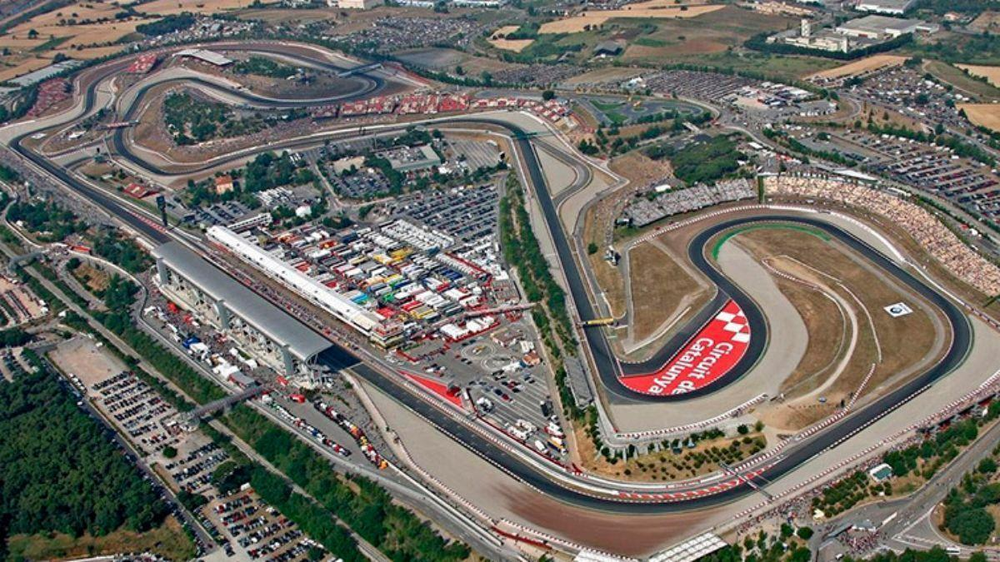

Características del Trazado
El circuito cuenta con zonas de alta velocidad y curvas técnicas exigentes para los pilotos.

Ficha Técnica
| Parámetro | Valor |
|---|---|
| Longitud total | 5.338 km |
| Número de vueltas | 57 |
| Zonas de DRS | 2 zonas |
Zonas destacadas
- Recta principal de meta.
- Horquilla de frenada fuerte.
- Chicana rápida de salida a recta posterior.